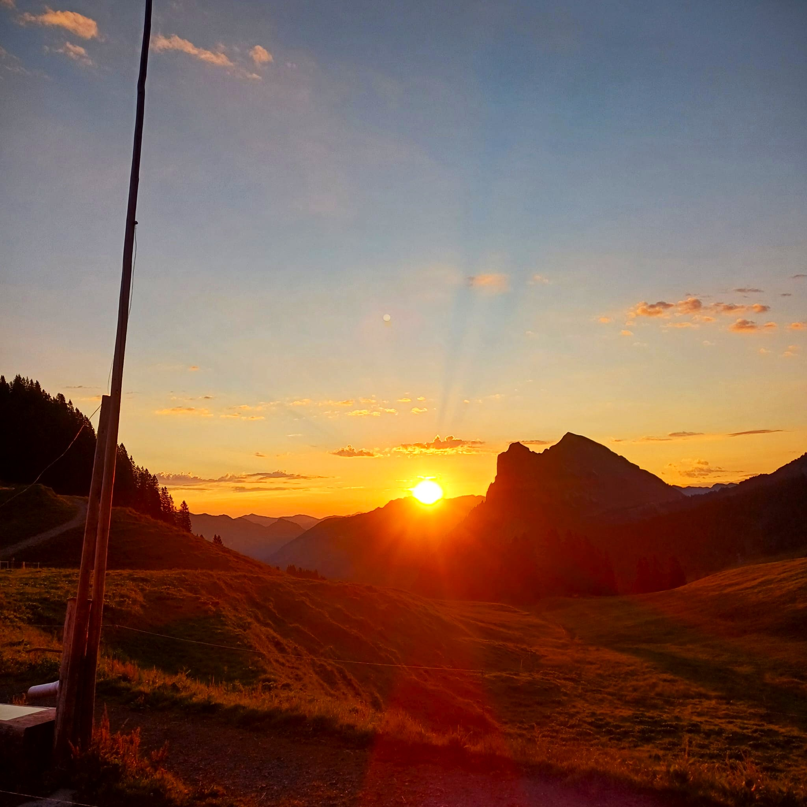
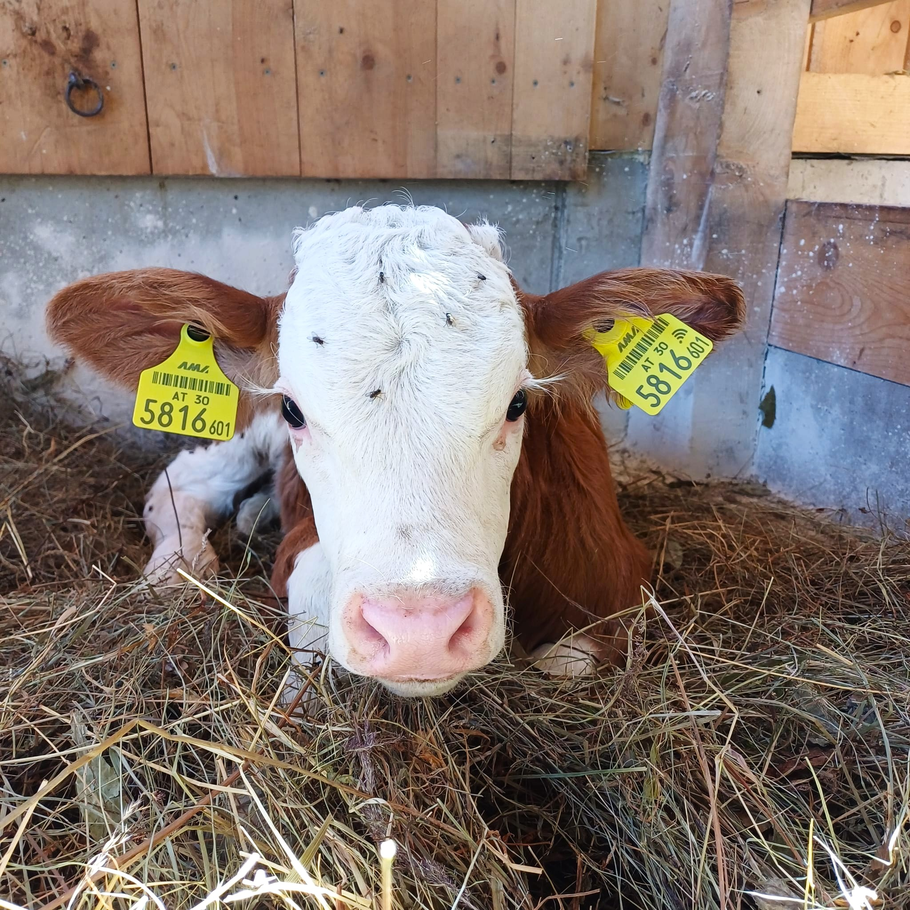
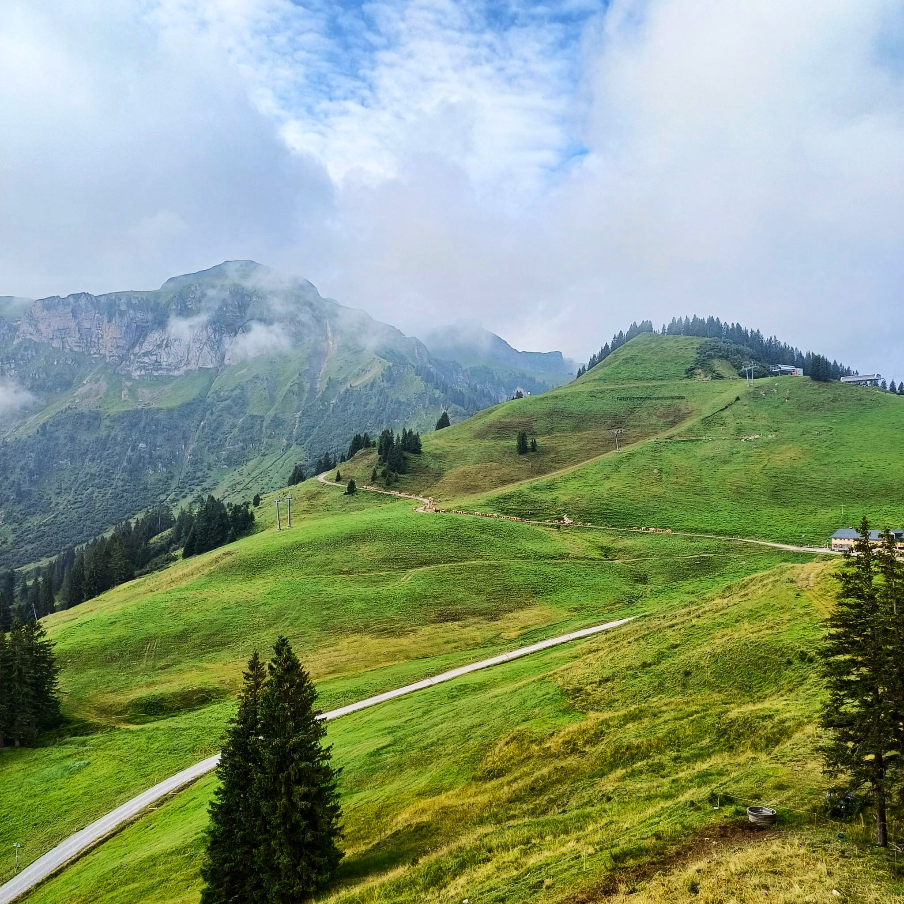
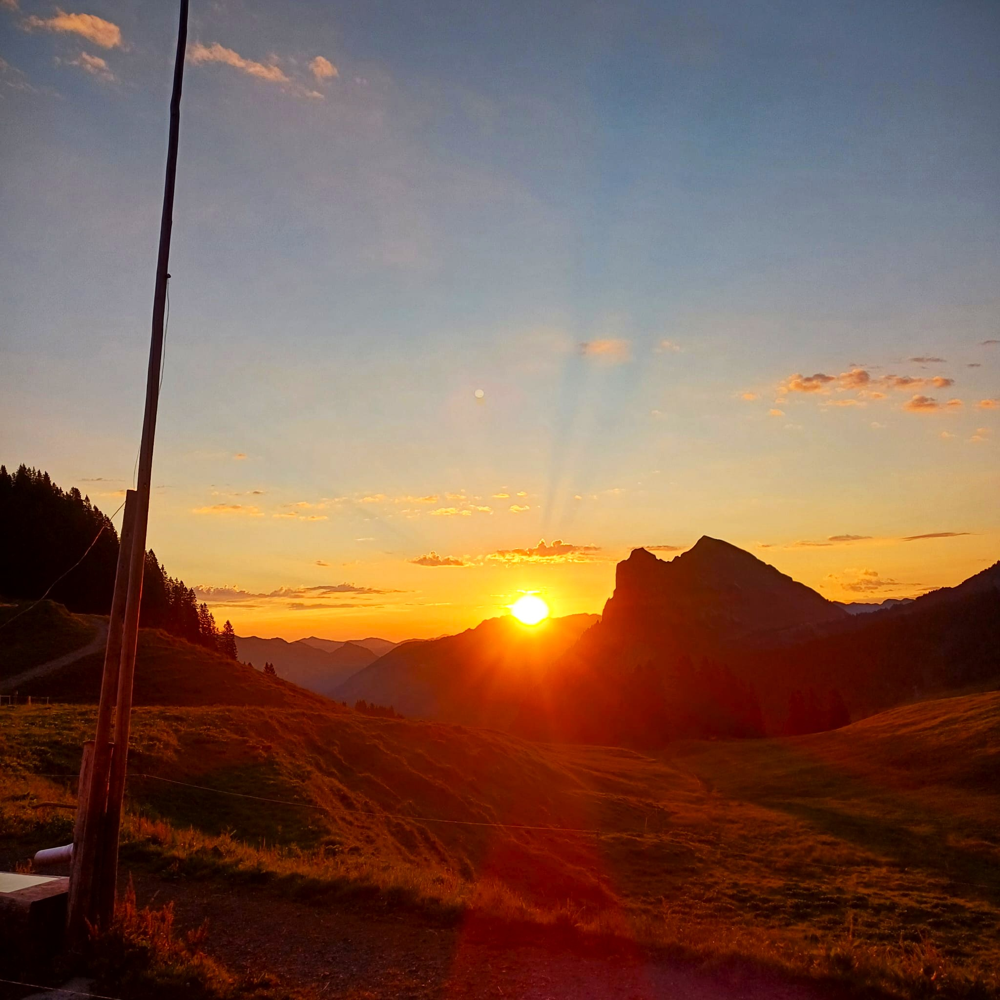
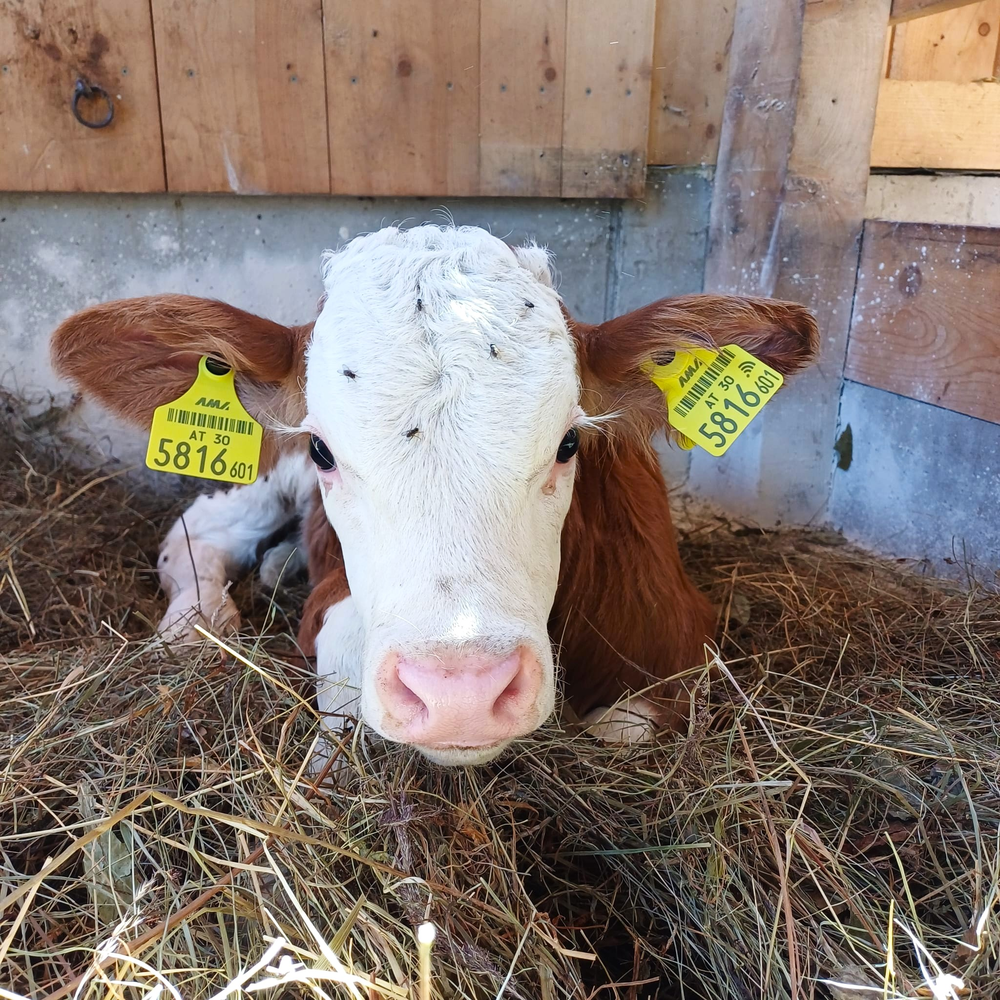
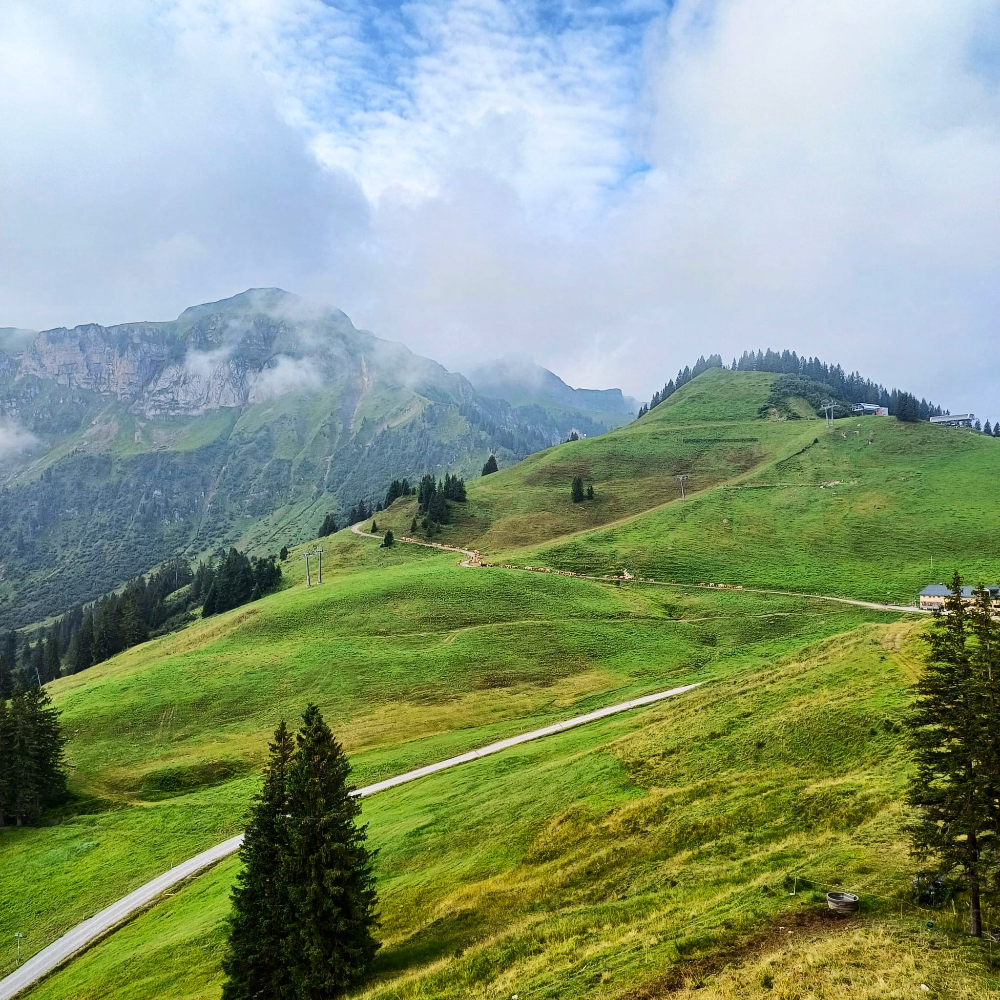

Über Uns
Die Alpe Wildgunten liegt in der Gemeinde Mellau und wird von Mitte Juni bis Mitte September täglich bewirtschaftet. Auf der Alpe befindet sich eine kleine Jausenstation mit gemütlichen Sitzplätzen im Freien und einem Stüble mit 20 Sitzplätzen. Auf der Speisekarte stehen ausschließlich Produkte aus der Region sowie selbst hergestellte Spezialitäten wie Alpkäse, Alpbutter, Kaminwurzen, Landjäger, Speck, Ziegenfrischkäse, Naturjoghurt und Molke in verschiedenen Variationen. Für die kleinen Gäste gibt es die Möglichkeit, die Kälber anzuschauen. Bei schlechtem Wetter ist das Stüble mit einem Holzofen beheizt, sodass es unsere Gäste auch bei schlechtem Wetter einmal gemütlich haben.
Unsere Produkte
Unsere Alpprodukte, darunter der berühmte Alp-Bergkäse aus eigener Herstellung, der natürlich auf unseren Jausenplatten oder in vakuumierter Form zum Verkauf steht. Auch der frisch produzierte Ziegenkäse kann bei uns entweder in Form einer Älplerjause oder auch im Verkauf erworben werden. Auch die Kaminwurzen und Landjäger aus eigener Herstellung werden bei uns verkauft.
Galerie
 




